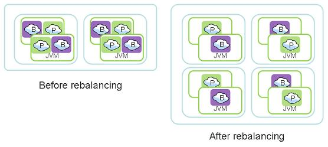

Section Summary: Explains how to deploy and manage an Elastic Processing Unit (EPU)
Overview
|
An Elastic Processing Unit (EPU) is a Processing Unit with additional capabilities that simplify its deployment across multiple machines. Containers and machine resources such as Memory and CPU are automatically provisioned based on Memory and CPU requirements. When a machine failure occurs, or when scale requirements change, new machines are provisioned and the Processing Unit deployment distribution is balanced automatically. The PU scale is triggered by modifying the requirements through an API call. From that point in time the EPU continuously maintains the specified capacity (indefinitely, or until the next scale trigger). The EPU features the following:
|
Basic steps when using the EPU:
- Start GigaSpaces agents
- Deploy PU
- Specify maximum PU capacity
- Specify container memory capacity
- Specify initial PU capacity
- Scale up/down or in/out
- Undeploy
Here is a quick EPU tutorial:
 For a quick start follow the Elastic Processing Unit deployment example.
For a quick start follow the Elastic Processing Unit deployment example.
| When using the EPU, GigaSpaces manage the entire life cycle of the container. Once the EPU is deployed containers are started and the EPU instances are provisioned into these containers. When the EPU scales up, additional containers are started and instances are relocated into these containers. When the EPU is un-deployed, all the containers associated with the EPU are automatically terminated. |
This page has three main sections:
- The Deployment section describes the required deployment parameters and capacity planning considerations.
- The Scale Triggers section describes how to scale a PU after it has been deployed.
- The Machine Provisioning, describes how to start the GigaSpaces agent on each machine, plug-in development for different cloud providers and the algorithm that re-balances the PU across the machines.
 With XAP 8.0 the EPU supports only partitioned deployment topology. The scale event is triggered by the administrator and not automatically when memory reaches a certain threshold.
With XAP 8.0 the EPU supports only partitioned deployment topology. The scale event is triggered by the administrator and not automatically when memory reaches a certain threshold.
Partitioned Deployment
The deployment of a partitioned (space based) EPU is done via the Admin API. Support for other PU topologies (stateless/web) are planned for the future releases.
In order for the deployment to work, the Admin API must first discover a running GSM, ESM (managers) and running GSAs (GigaSpaces agents).
// Wait for the discovery of the managers and at least one GigaSpaces agent Admin admin = new AdminFactory().addGroup("myGroup").create(); admin.getGridServiceAgents().waitForAtLeastOne(); admin.getElasticServiceManagers().waitForAtLeastOne(); GridServiceManager gsm = admin.getGridServiceManagers().waitForAtLeastOne();
Maximum Memory Capacity
The EPU deployment requires two important properties:
- memoryCapacityPerContainer defines the Java Heap size of the Java Virtual Machine and is the most granular memory allocation deployment property. It is internally translated to: .
commandLineArgument("-Xmx"+memory).commandLineArgument("-Xms"+memory)
- maxMemoryCapacity provides an estimate for the maximum total Processing Unit memory.
Here is a typical example for a memory capacity Processing Unit deployment. The example also includes a scale trigger that is explained in the following sections of this page.
// Deploy the Elastic Stateful Processing Unit ProcessingUnit pu = gsm.deploy( new ElasticStatefulProcessingUnitDeployment(new File("myPU.jar")) .memoryCapacityPerContainer(16,MemoryUnit.GIGABYTES) .maxMemoryCapacity(512,MemoryUnit.GIGABYTES) //initial scale .scale(new ManualCapacityScaleConfigurer() .memoryCapacity(128,MemoryUnit.GIGABYTES) .create()) );
Here is again the same example, this time the deployed Processing Unit is a pure Space (no jar files):
// Deploy the Elastic Space ProcessingUnit pu = gsm.deploy( new ElasticSpaceDeployment("mySpace") .memoryCapacityPerContainer(16,MemoryUnit.GIGABYTES) .maxMemoryCapacity(512,MemoryUnit.GIGABYTES) //initial scale .scale( new ManualCapacityScaleConfigurer(). memoryCapacity(128,MemoryUnit.GIGABYTES). create()) );
These two properties are used to calculate the number of partitions for the Processing Unit as follows:
minTotalNumberOfInstances = ceil(maxMemoryCapacity/memoryCapacityPerContainer) = ceil(1024/256) = 4 numberOfPartitions = ceil(minTotalNumberOfInstances/(1+numberOfBackupsPerPartition)) = ceil(4/(1+1)) = 2
 The number of Processing Unit partitions cannot be changed without re-deployment of the PU.
The number of Processing Unit partitions cannot be changed without re-deployment of the PU.
Maximum Number of CPU Cores
In many cases when you should take the number of space operations per second into consideration when scaling the system. The memory utilization will be a secondary factor when calculating the required scale. For example, if the system performs mostly data updates (as opposed to reading data), the CPU resources could be a limiting factor more than the total memory capacity. In these cases use the maxNumberOfCpuCores deployment property. Here is a typical deployment example that includes CPU capacity planning:
// Deploy the EPU ProcessingUnit pu = gsm.deploy( new ElasticStatefulProcessingUnitDeployment(new File("myPU.jar")) .memoryCapacityPerContainer(16,MemoryUnit.GIGABYTES) .maxMemoryCapacity(512,MemoryUnit.GIGABYTES) .maxNumberOfCpuCores(32) // continously scale as new machines are started .scale(new EagerScaleConfig()) );
The maxNumberOfCpuCores property provides an estimate for the maximum total number of CPU cores on machines that have one or more primary processing unit instances deployed (instances that are not in backup state). Internally the number of partitions is calculated as follows:
minTotalNumberOfInstances
= ceil(maxMemoryCapacity/memoryCapacityPerContainer)
= ceil(1024/256)=4
minNumberOfPrimaryInstances
= ceil(maxNumberOfCpuCores/minNumberOfCpuCoresPerMachine)
= ceil(8/2)
= 4
numberOfPartitions
= max(minNumberOfPrimaryInstances,
ceil(minTotalNumberOfInstances/(1+numberOfBackupsPerPartition))
= max(4, 4/(1+1) )
= 4
In order to evaluate the minNumberOfCpuCoresPerMachine, the deployment communicates with each discovered GigaSpaces agent and collects the number of CPU cores the operating system reports. In case a machine provisioning plugin (cloud) is used, the plugin provides that estimate instead. The minNumberOfCpuCoresPerMachine deployment property can also be explicitly defined.
Explicit Number of Partitions
The numberOfPartitions property allows explicit definition of the number of space partitions. When the numberOfPartitions property is defined then maxMemoryCapacity and maxNumberOfCpuCores should not be defined.
// Deploy the EPU ProcessingUnit pu = gsm.deploy( new ElasticStatefulProcessingUnitDeployment(new File("myPU.jar")) .memoryCapacityPerContainer(16,MemoryUnit.GIGABYTES) .numberOfPartitions(12) .scale(new EagerScaleConfig()) );
Here is another example, deployment with explicit number of partitions and memory capacity scale trigger:
// Deploy the EPU ProcessingUnit pu = gsm.deploy( new ElasticStatefulProcessingUnitDeployment(new File("myPU.jar")) .memoryCapacityPerContainer(16,MemoryUnit.GIGABYTES) .numberOfPartitions(12) .scale(new ManualCapacityScaleConfigurer() .memoryCapacity(16,MemoryUnit.GIGABYTES) .create()) ) ); // Application continues Thread.sleep(10000); // Scale out to 32GB memory pu.scale(new ManualCapacityScaleConfigurer() .memoryCapacity(32,MemoryUnit.GIGABYTES) .create() );
Specifying number of partitions explicitly is recommended only when fine grained scale triggers are required. The example below illustrating 12 partitions system (12 primaries + 12 backups = 24 instances). See how the system scales to have increased total memory capacity as a function of the number of Containers and memoryCapacityPerContainer:
memoryCapacityPerContainer 6G
| Number of Containers | Number of partitions per container | Total available memory |
|---|---|---|
| 2 | 24 / 2 = 12 | 2 * 6GB = 12GB |
| 4 | 24 / 4 = 6 | 4 * 6GB = 24GB |
| 8 | 24 / 8 = 3 | 8 * 6GB = 48GB |
| 12 | 24 / 12 = 2 | 12 * 6GB = 72GB |
memoryCapacityPerContainer 12G
| Number of Containers | Number of partitions per container | Total available memory |
|---|---|---|
| 2 | 24 / 2 = 12 | 2 * 12GB = 24GB |
| 4 | 24 / 4 = 6 | 4 * 12GB = 48GB |
| 8 | 24 / 8 = 3 | 8 * 12GB = 96GB |
| 12 | 24 / 12 = 2 | 12 * 12GB = 144GB |
memoryCapacityPerContainer 24G
| Number of Containers | Number of partitions per container | Total available memory |
|---|---|---|
| 2 | 24 / 2 = 12 | 2 * 24GB = 48GB |
| 4 | 24 / 4 = 6 | 4 * 24GB = 96GB |
| 8 | 24 / 8 = 3 | 8 * 24GB = 192GB |
| 12 | 24 / 12 = 2 | 12 * 24GB = 288GB |
 Having larger number of partitions will provide you better flexibility in terms of having more scaling "check points". Having too many partitions (hundreds) will impact the system performance since in some point this will generate some overhead due to the internal monitoring required for each partition.
Having larger number of partitions will provide you better flexibility in terms of having more scaling "check points". Having too many partitions (hundreds) will impact the system performance since in some point this will generate some overhead due to the internal monitoring required for each partition.
Deployment on a Single Machine (for development purposes)
For development and demonstration purposes, it is very convenient to deploy the EPU on a single machine. By default, the minimum number of machines is two (for high availability concerns). This could be changed using the singleMachineDeployment property.
// Deploy the EPU ProcessingUnit pu = gsm.deploy( new ElasticStatefulProcessingUnitDeployment(new File("myPU.jar")) .memoryCapacityPerContainer(256,MemoryUnit.MEGABYTES) .maxMemoryCapacity(1024,MemoryUnit.MEGABYTES) .singleMachineDeployment() // deploy on a single machine // other processes running on machine would have at least 2GB left .scale(new ManualCapacityScaleConfigurer() //initial scale .memoryCapacity(512,MemoryUnit.MEGABYTES) .reservedMemoryCapacityPerMachine(2,MemoryUnit.GIGABYTES) .create()) );
Scale Triggers
Manual Capacity Scale Trigger
The system administrator may specify the memory and/or CPU core resources required for the processing unit in production. This should be specified during the deployment time, and could be specified also anytime after the deployment. The memory capacity trigger affects the number of provisioned containers. If there are not enough machines to host the provisioned containers the trigger also affects the number of provisioned machines. The number of CPUs affect directly the number of provisioned machines (even if it means that some of the machines have unused memory).
When specifying both memory and cores capacity requirements as part of the deploy and scale routines, the EPU will be deployed successfully only when both memory and cores resources can be allocated (sufficient amount of memory and cores across the available machines). If you would like to the memory capacity requirements to take precedence on the cores capacity requirements, have lower values for the cores capacity requirements than the exact existing cores count.
Here is an example how you can scale a deployed EPU memory and CPU capacity.
Step 1 - Deploy the PU:
We deploy the PU having 512GB as the maximum total amount of memory utilized both for primary and backup instances where the entire system should consume maximum of 32 cores. At start only 128GB and 8 cores will be utilized.
ProcessingUnit pu = gsm.deploy(
new ElasticStatefulProcessingUnitDeployment(new File("myPU.jar"))
.memoryCapacityPerContainer(16,MemoryUnit.GIGABYTES)
.maxMemoryCapacity(512,MemoryUnit.GIGABYTES)
.maxNumberOfCpuCores(32)
// set the initial memory and CPU capacity
.scale(new ManualCapacityScaleConfigurer()
.memoryCapacity(128,MemoryUnit.GIGABYTES)
.numberOfCpuCores(8)
.create())
);
// Wait until the deployment is complete.
pu.waitForSpace().waitFor(pu.getTotalNumberOfInstances());
Step 2 - Increase the memory capacity from 128GB to 256GB and number of cores from 8 to 16:
ProcessingUnit pu = admin.getProcessingUnits().waitFor("myPU", 5,TimeUnit.SECONDS); //get the PU // increasing the memory capacity will start new containers // existing machines if enough free memory is available pu.scale(new ManualCapacityScaleConfigurer() .memoryCapacity(256,MemoryUnit.GIGABYTES) .numberOfCpuCores(16) .create());
Step 3 - Increase the memory capacity from 256GB to 512GB and number of cores from 16 to 32:
ProcessingUnit pu = admin.getProcessingUnits().waitFor("myPU", 5,TimeUnit.SECONDS); //get the PU // scales out to more CPU cores (existing containers are terminated on existing machines and // new are started on new machines if not enough CPU cores are available on existing machines) pu.scale(new ManualCapacityScaleConfigurer() .memoryCapacity(512,MemoryUnit.GIGABYTES) .numberOfCpuCores(32) .create());
Step 4 - Decrease the memory capacity and CPU capacity:
ProcessingUnit pu = admin.getProcessingUnits().waitFor("myPU", 5,TimeUnit.SECONDS); //get the PU pu.scale(new ManualCapacityScaleConfigurer() .memoryCapacity(128,MemoryUnit.GIGABYTES) .numberOfCpuCores(8) .create());
Eager Scale Trigger
Eager trigger scales the EPU on all available machines and new machines joining the GigaSpaces Grid. Each new machine running a GigaSpaces agent automatically starts a new container hosting the EPU partition instance(s) relocated from some other container. To use the Eager Scale Trigger you should scale the EPU using the EagerScaleConfigurer:
pu.scale(new EagerScaleConfigurer().create());
The Eager trigger has the following limitations:
- Number of maximum machines is limited to the number of partitions calculated/defined during the deployment time.
- Eager is limited to only one EPU per Lookup Service.
The differences between the Eager scale trigger and a Manual capacity trigger in terms of the maximum amount of memory and CPU are:
- Manual capacity trigger expects the administrator to start enough available machines running the GigaSpaces agent to satisfy the specified capacity. Since it expects a new machine to be started, it does not balance the Processing Unit instances nor it does start new containers, until the machines are started. Eager trigger, on the other hand, redeploys as best as it can on the available machines, and scales out only when another machine is started or until the max capacity is reached.
- The Eager trigger spreads out thin if enough machines are available (to gain as much CPU resources as possible). Manual trigger spreads out to new machines, before existing machines' memory is utilized, only when the numberOfCpu property is high enough.
Machine Provisioning
System Bootstrapping
Each machine requires a single running GigaSpaces Agent. The example below shows how to start a new GigaSpaces agent. The command line parameters instruct the agents to communicate with each other and start the specified amount of managers. It does not start any containers automatically. The EPU starts containers on demand.
That means that potentially any machine could be a management machine:
Windows
rem Agent deployment that potentially can start management processes
set LOOKUPGROUPS=myGroup
set JSHOMEDIR=d:\gigaspaces
start cmd /c "%JSHOMEDIR%\bin\gs-agent.bat gsa.global.esm 1 gsa.gsc 0 gsa.global.gsm 2 gsa.global.lus 2"
Linux
# Agent deployment that potentially can start management processes
export LOOKUPGROUPS=myGroup
export JSHOMEDIR=~/gigaspaces
nohup ${JSHOMEDIR}/bin/gs-agent.sh gsa.global.esm 1 gsa.gsc 0 gsa.global.gsm 2 gsa.global.lus 2 > /dev/null 2>&1 &
Dedicated Management Machines
In case you prefer having dedicated management machines, start GigaSpaces agents with the above settings on two machines, and start the rest of the GigaSpaces agents with the settings below. The command line parameters instruct the GigaSpaces agents not to start managers. It does not start any containers automatically. The EPU starts containers on demand:
Windows
rem Agent that does not start management processes
set LOOKUPGROUPS=myGroup
set JSHOMEDIR=d:\gigaspaces
start cmd /c "%JSHOMEDIR%\bin\gs-agent.bat gsa.global.esm 0 gsa.gsc 0 gsa.global.gsm 0 gsa.global.lus 0"
Linux
# Agent that does not start management processes
export LOOKUPGROUPS=myGroup
export JSHOMEDIR=~/gigaspaces
nohup ${JSHOMEDIR}/bin/gs-agent.sh gsa.global.esm 0 gsa.gsc 0 gsa.global.gsm 0 gsa.global.lus 0 > /dev/null 2>&1 &
Configure the EPU scale config to use dedicatedManagementMachines, and reduce the reservedMemoryCapacityPerMachine. For more information consult the scale configuration JavaDoc.
Automatic Machine Provisioning
The EPU supports automatic Virtual Machines provisioning through custom plugins. The plugins are open source http://svn.openspaces.org/cvi/trunk and provide an implementation of ElasticMachineProvisioningConfig and ElasticMachineProvisioning.
When deploying an EPU pass an instance of ElasticMachineProvisioningConfig as the machineProvisioning deployment property.
ProcessingUnit pu = gsm.deploy(
new ElasticStatefulProcessingUnitDeployment(new File("myPU.jar"))
.memoryCapacityPerContainer(16,MemoryUnit.GIGABYTES)
.maxMemoryCapacity(512,MemoryUnit.GIGABYTES)
.maxNumberOfCpuCores(32)
//automatically start new virtual machines on demand
.machineProvisioning(new XenServerMachineProvisioning("xenserver.properties"))
);
When deploying Gigaspaces XAP on the management machine(s) place the plug-in JAR file under /gigaspaces-xap/lib/platform/esm folder. The ESM then loads classes specified by the machineProvisioning configuration. These classes need to implement either ElasticMachineProvisioning or NonBlockingElasticMachineProvisioning. That class must also implement Bean which has resemblance to the Spring Bean.
Automatic Re-balancing
Each processing unit has a fixed number of partitions which are predefined during deployment. Each partition has by default two instances - a primary and a backup. Instances of an EPU are automatically relocated between containers until the following criteria is met:
- Number of instances per container is nearly the same across all containers.
- Number primary instances per cores is nearly the same across all machines.

Re-balancing automatic process considerations:
- It assumes that all partitions are equal (in terms of memory and CPU consumption).
- When manual capacity scale is used, the specified memory capacity and CPU cores must be provisioned before the re-balancing takes place. As long as the available machines do not meet the specified memory capacity or CPU cores re-balancing does not take place.
- The maximum number of CPU cores that can be occupied by the Processing Unit primary instances is:
.numberOfPartitions X numberOfCpuCoresPerMachine
- The maximum ammount of memory that can be used by the primary and backup instances is:
.numberOfParitions X ( 1 + numberOfBackupsPerPartition ) X memoryCapacityPerContainer
- During relocation of a specific instance, primary election takes place. For a few seconds, operations on that partition and operations on the whole cluster is denied. Internally, the client proxy retries the operation until the primary election takes place and masks the failure, but the delay exists.
This delay can be reduced by modifying cluster-config.groups.group.fail-over-policy.active-election.yield-time. The default number of retries for an EPU is 20, and can be configured with space-config.proxy-settings.connection-retries. Overriding the default value of these context properties is achieved with the addContextProperty deployment property. For example:ProcessingUnit pu = gsm.deploy( new ElasticStatefulProcessingUnitDeployment(new File("myPU.jar")) .memoryCapacityPerContainer(16,MemoryUnit.GIGABYTES) .maxMemoryCapacity(512,MemoryUnit.GIGABYTES) .maxNumberOfCpuCores(32) .addContextProperty("cluster-config.groups.group.fail-over-policy.active-election.yield-time","300") );
Main Configuration Properties
Elastic Deployment Topology Configuration
Here are the main configuration properties you may use with the ElasticSpaceDeployment and the ElasticStatefulProcessingUnitDeployment:
| Property | Type | Description | Default | Mandatory |
|---|---|---|---|---|
| highlyAvailable | boolean | Specifies if the space should duplicate each information on two different machines. | true | No |
| memoryCapacityPerContainer | int , MemoryUnit | Specifies the the heap size per container (operating system process) | Yes | |
| minNumberOfCpuCoresPerMachine | double | Overrides the minimum number of CPU cores per machine assumption. | No | |
| maxMemoryCapacity | int , MemoryUnit | Specifies an estimate of the maximum memory capacity for this processing unit. | Yes | |
| maxNumberOfCpuCores | int | Specifies an estimate for the maximum total number of cpu cores used by this processing unit. | No | |
| numberOfPartitions | int | Defines the number of processing unit partitions. | No | |
| numberOfBackupsPerPartition | int | Overrides the number of backup processing unit instances per partition. | 1 | No |
| secured | boolean | deploy a secured processing unit. | false | No |
| singleMachineDeployment | Allows deployment of the processing unit on a single machine, by lifting the limitation for primary and backup processing unit instances from the same partition to be deployed on different machines. | false | No | |
| userDetails | UserDetails | Advanced: Sets the security user details for authentication and authorization of the processing unit. | No | |
| scale | EagerScaleConfig or ManualCapacityScaleConfig | Enables the specified scale strategy, and disables all other scale strategies. | No | |
| useScriptToStartContainer | Allow the GridServiceContainer to be started using a script and not a pure Java process. | No |
Scale Strategy Configuration
Here are the main configuration properties you may use with the EagerScaleConfig and the ManualCapacityScaleConfig:
| Property | Type | Description | Default | Mandatory |
|---|---|---|---|---|
| memoryCapacityInMB | int | Specifies the total memory capacity of the processing unit. | Yes | |
| numberOfCpuCores | int | Specifies the total CPU cores for the processing unit. | No | |
| maxConcurrentRelocationsPerMachine | int | Specifies the number of processing unit instance relocations each machine can handle concurrently. By setting this value higher than 1, processing unit rebalancing completes faster, by using more machine cpu and network resources | 1 | No |
| reservedMemoryCapacityPerMachineInMB | int | Sets the expected amount of memory per machine that is reserved for processes other than grid containers. These include Grid Service Manager, Lookup Service or any other daemon running on the system. | 1024 MB | No |
Considerations
- The ESM does not support a redundant instance. Running multiple ESMs is not supported. This will be supported with future releases.
- Once an ESM is terminated and restarted, it can't recover the system current status. This means it does not enforce any SLA specified previously. In such a case you should redeploy the PU. This will allow the ESM to recover the PU SLA.
- The speed up the deployment process you should increase the maxConcurrentRelocationsPerMachine parameter to have a larger number than 1 (default value). Having a value of 2 or 3 might speed up the deploy time when having multiple machines.
- Scaling EPU should be done using multipliers that match the amount of the initial capacity. This will allow the system to allocate the exact memory/cores requested.
- When deploying on a Single Machine (using the singleMachineDeployment mode) you should make sure the machine has enough memory/cores resources for the entire EPU instances. The reservedMemoryCapacityPerMachine should be used to ensure relevant resources. Without having these set, the deploy process will fail.
- In case of a failure with the deploy process due to insufficient resources or other reasons, the ESM will retry to deploy the EPU. To stop this activity, you should explicitly undeploy the EPU. You may use the UI, CLI or API to undeploy it.
- To verify a successful deployment, you should check the PU status (see the org.openspaces.admin.pu.ProcessingUnit.getStatus() and the org.openspaces.admin.pu.ProcessingUnit.getProcessingUnitStatusChanged()). You may also check the total amount of memory/cores utilized by the EPU by iterating the PU instances.
- To monitor the EPU deployment you should monitor the ESM. A simple way to do that is to review its log file. You may use the GS-UI to have direct access to the ESM log files.